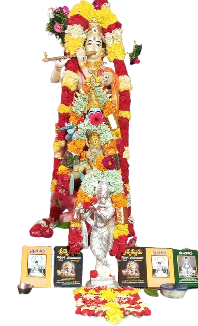
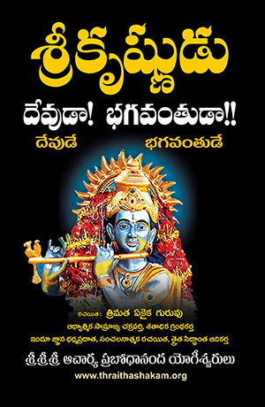

కృష్ణం జగద్గురుం
జై కృష్ణ జై జై కృష్ణ
త్రిమత ఏకైక గురువు , ఆధ్యాత్మిక సామ్రాజ్య చక్రవర్తి,
(100)శతాధిక గ్రంథకర్త,ఇందూ జ్ఞాన ధర్మ ప్రదాత, సంచలనాత్మక రచయిత, త్రైతసిద్ధాంత ఆదికర్త
శ్రీ శ్రీ శ్రీ ఆచార్య ప్రబోధానంద యోగీశ్వరుల వారీ.

దివ్య ఆశీస్సులతో
త్రైతశకము - 45

భక్తా గ్రేసరులారా ! తేదీ: 16-08-2025, బుధవారం రోజునా శ్రీ కృష్ణ జన్మాష్టమి
పండుగ శుభసందర్బంగా శ్రీ కృష్ణాష్టమి వేడుకలు జరుపుచున్నాము . ఆధ్యాత్మిక ప్రియులు ,
శ్రీ కృష్ణ భక్తులు అందరూ వచ్చి వేడుకలు మరియు ఊరు ఎరిగింపు (ఊరేగింపు )
కార్యక్రమాలలో పాల్గొని ఆ దేవదేవుని జ్ఞాన దీవెనలు పొందగలరని కోరుచున్నాము .
తేది
16.08. 2025 శనివారం నుండి
17. 08. 2025 ఆదివారం వరుకు
వేదిక
అయ్యవారిపల్లి, గుంతకల్ (మం )
ఊరు ఎరిగింపు
17.08.2025,ఆదివారం
మధ్యాహ్నం 3 గంటల నుండి
కార్యక్రమ వివరములు:నిత్య జీవము ,సత్య మార్గము ,మోక్ష ద్వారము అన్ని నీవే క్రిష్ణా !
తేదీ :16.08. 2025,శనివారం ఉదయం 7.00 గం.లకు పూజ మండపం వద్ద భక్తి శ్రద్దలతశ్రీ కృష్ణ భగవానుని పూజా కార్యక్రమం,
భగవద్ధ్గీత శ్లోకాలు పఠనంతో వేడుకలు ప్రారంభం .
తేదీ :17.08.2025,ఆదివారం ఊరేగింపు తేదీ వరుకు ప్రతిరోజు ఉదయం 7. 00గంటలకు మరియు సాయంత్రం 6.00 గంటలకు
పూజ కార్యక్రమాలు ,భగవద్గీత శ్లోకాలు పఠనం మరియు శ్రీ శ్రీ శ్రీ ఆచార్య ప్రబోధానంద యోగీశ్వరులు వారి సంచలనాత్మక త్రిమత,
ఆధ్యాత్మిక గ్రంధములు మరియు ప్రసంగాలు డీవీడీలు ప్రదర్శన జరుగును
భగవద్ధ్గీత శ్లోకాలు పఠనంతో వేడుకలు ప్రారంభం .
తేదీ :17.08.2025,ఆదివారం ఊరేగింపు తేదీ వరుకు ప్రతిరోజు ఉదయం 7. 00గంటలకు మరియు సాయంత్రం 6.00 గంటలకు
పూజ కార్యక్రమాలు ,భగవద్గీత శ్లోకాలు పఠనం మరియు శ్రీ శ్రీ శ్రీ ఆచార్య ప్రబోధానంద యోగీశ్వరులు వారి సంచలనాత్మక త్రిమత,
ఆధ్యాత్మిక గ్రంధములు మరియు ప్రసంగాలు డీవీడీలు ప్రదర్శన జరుగును

శ్రీ కృష్ణుని
నిజభావమును తెలిపిన
త్రైతసిద్ధాంత
భగవధ్గీత
చదవండి !

శ్రీ కృష్ణుని జీవితంలోని
మహారహస్యములను తెలుపు
శ్రీ కృష్ణుడు
దేవుడా!భగవంతుడా!!
గ్రంధమును చదవండి !
ఆహ్వానించువారు
ప్రబోధ సేవాసమితి -ఇందూ జ్ఞానవేదిక
అయ్యవారిపల్లి శాఖ
ఫోన్ :7989015069 ,
6303262776